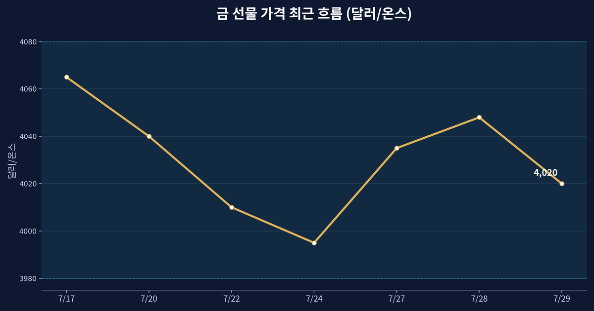
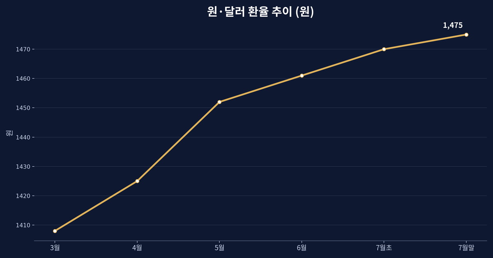
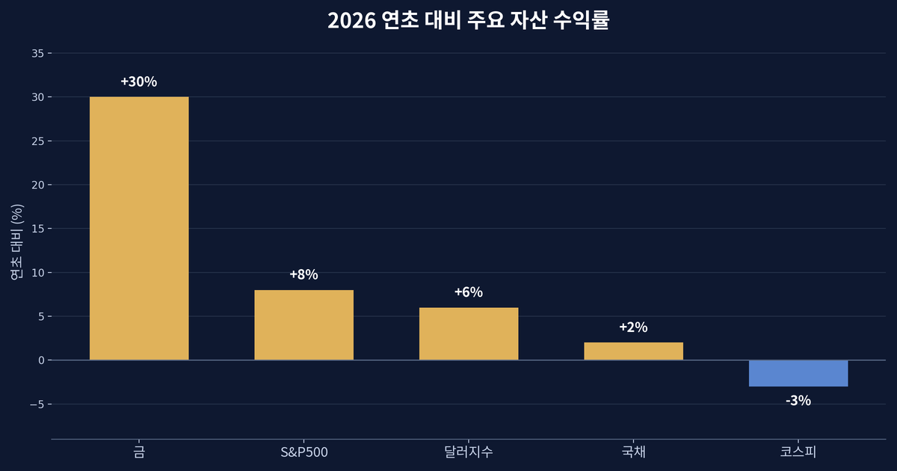
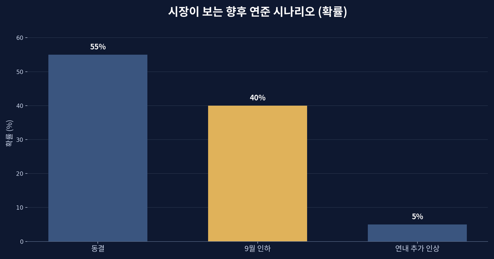

7월 FOMC 이후, 금값이 4,000달러 박스권에 갇힌 이유

4,000달러 앞에서 멈춘 금
2026년 7월 29일, 금 8월물은 온스당 4,020달러 언저리에서 거래를 시작했다. 전날보다 0.4%가량 낮은 수준이다. 몇 주째 금은 3,980달러에서 4,080달러 사이의 좁은 상자 안을 오르내리고 있다. 사상 최고치를 잇달아 갈아치우던 기세를 떠올리면 의외의 정적이다. 왜 금은 갑자기 조용해졌을까. 답은 금 자체가 아니라, 금을 사고파는 돈이 지금 '기다리고 있기' 때문이다.

연준은 왜 시장을 붙잡아 두었나
같은 날 연방준비제도(연준)는 이틀간의 연방공개시장위원회(FOMC) 회의를 마쳤다. 시장이 이번 회의에서 금리를 바꿀 것으로 본 확률은 25%를 조금 넘는 정도였고, 다수는 움직임이 있다면 9월일 것이라고 봤다. 즉 7월은 '아무것도 하지 않음으로써 신호를 주는' 회의였다. 방향을 확정하지 않은 채 데이터를 더 보겠다는 태도는, 돈의 입장에서는 '아직 크게 베팅하지 말라'는 신호와 같다.
금리가 오를지 내릴지 불투명할 때, 이자를 낳지 않는 금은 애매한 처지에 놓인다. 금리가 높게 유지되면 채권과 예금이 상대적으로 매력적이라 금은 눌리고, 반대로 인하 기대가 커지면 금이 다시 힘을 받는다. 지금은 그 두 힘이 팽팽히 맞서 있어 금값이 좁은 박스에 갇힌 것이다.

달러가 무거워지면 금은 눌린다
여기에 달러 강세가 얹혔다. 달러로 값을 매기는 금은 달러가 비싸질수록 다른 나라 투자자에게 부담스러워진다. 최근 달러가 단단해지면서 금의 상단을 막는 뚜껑 역할을 하고 있다. 다만 중동의 지정학적 긴장이 하단을 받쳐, 금이 크게 무너지지도 않는다. 위는 달러가 막고 아래는 지정학이 받치는, 전형적인 눈치보기 국면이다.
흥미로운 점은 각국 중앙은행이 조용히 금을 계속 사 모으고 있다는 사실이다. 단기 트레이더가 관망하는 사이, 장기적으로 달러 의존을 줄이려는 국가들의 매수는 금의 바닥을 두껍게 만든다. 표면의 정적과 물밑의 흐름이 서로 다른 셈이다.

이 돈은 지금 어디로 흐르나
유동성의 관점에서 보면, 방향을 정하지 못한 돈은 '가만히 있는 것'이 아니라 '덜 위험한 곳으로 잠시 피신하는 것'이다. 달러와 미국 단기 국채가 그 대기실 역할을 한다. 그러다 9월 회의에서 방향이 잡히면 대기하던 돈은 한꺼번에 움직일 가능성이 크다. 지금의 고요함은 오히려 폭풍 전야에 가깝다.
한국 시장은 이 흐름의 끝자락에 놓여 있다. 달러가 강하고 원화가 1,475원 안팎에서 약세를 보이는 동안, 외국인은 환차손을 우려해 코스피에서 발을 빼기 쉽다. 반대로 연준이 인하로 방향을 틀어 달러가 풀리면 신흥국과 한국 자산으로 돈이 되돌아올 여지가 생긴다. 금값의 박스권은 그래서 한국 투자자에게도 남의 이야기가 아니다.

정적을 읽는 법
시장이 조용할 때 우리는 흔히 '아무 일도 없다'고 여긴다. 그러나 조용함은 그 자체로 하나의 정보다. 큰돈이 방향을 정하지 못했다는 뜻이고, 곧 정해질 것이라는 예고이기도 하다. 개인이 할 수 있는 일은 방향을 미리 맞히는 도박이 아니라, 어느 쪽으로 튀어도 견딜 수 있게 자산을 나눠 두는 것이다. 금, 달러, 주식, 현금이 각각 다른 국면에서 다른 역할을 한다는 사실을 기억하는 것만으로도 충분하다.